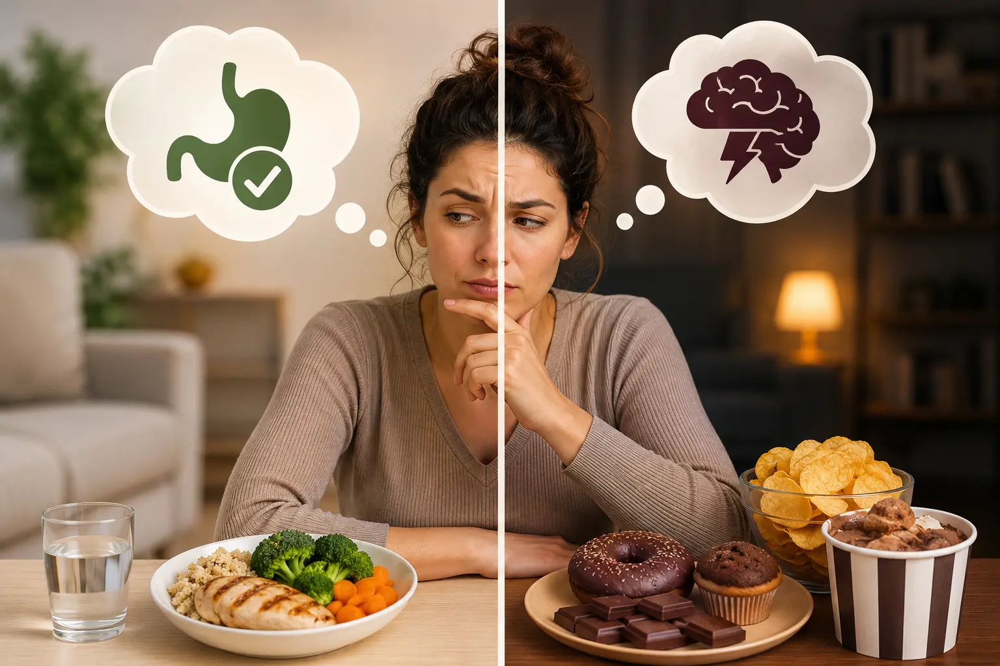

Pontos-Chave do Artigo:
- Fome Física: Gradual, localizada no estômago, aceita variedade.
- Fome Emocional: Súbita, localizada na mente, pede alimentos específicos.
- Ferramenta Prática: Use a Escala de Fome para avaliar a necessidade real.
- Ação: Nomeie a emoção e crie um espaço de tempo antes de agir.
Uma das perguntas mais comuns no consultório é: "como eu sei se estou com fome de verdade ou só com vontade de comer?". A resposta parece simples, mas a maioria das pessoas nunca aprendeu a fazer essa distinção — porque ninguém ensina isso. Crescemos comendo por horário, por hábito, por ansiedade ou por tédio, sem nunca parar para checar o que o corpo realmente está pedindo.
Entender a diferença entre fome física e fome emocional não é sobre criar mais uma regra alimentar. É sobre desenvolver consciência corporal — a base de qualquer mudança de comportamento alimentar duradoura, sem depender de dietas restritivas ou força de vontade.
1. Quais são os sinais da fome física?
A fome física é uma necessidade fisiológica real, causada pela queda de glicose no sangue e pelo esvaziamento do estômago. Ela tem características bem definidas:
- Aparece de forma gradual, aumentando aos poucos ao longo de minutos ou horas.
- Aceita qualquer alimento. Quando a fome é física, uma fruta ou um prato de arroz e feijão resolvem tão bem quanto um doce.
- Vem acompanhada de sinais corporais, como ronco no estômago, leve tontura, irritação e queda de energia ou concentração.
- Desaparece com a alimentação e deixa uma sensação de satisfação, sem culpa.
- Pode esperar — mesmo que seja desconfortável, ela não exige ser saciada no segundo seguinte.
2. Quais são os sinais da fome emocional?
A fome emocional, por outro lado, não nasce no estômago — nasce na mente, como resposta a uma emoção que a pessoa ainda não sabe processar de outra forma. Os sinais mais comuns são:
- Surge de repente e parece urgente, como se precisasse ser resolvida imediatamente.
- Pede alimentos específicos — como a famosa vontade de comer doce do nada, ultraprocessados ou frituras, em vez de uma refeição comum.
- Não está ligada a sinais físicos de fome, podendo aparecer mesmo logo após uma refeição completa.
- Está associada a uma emoção, como tédio, ansiedade, tristeza, solidão ou estresse.
- Não passa com a comida. Mesmo depois de comer, a sensação de satisfação não vem — em vez disso, aparecem culpa, vergonha ou vontade de continuar comendo.
Fome Física vs. Fome Emocional
| Fome Física | Fome Emocional |
|---|---|
| Aparece aos poucos | Aparece de repente |
| Aceita qualquer alimento | Pede alimentos específicos |
| Localizada no estômago | Localizada na cabeça/emoção |
| Pode esperar | Parece urgente |
| Termina com satisfação | Termina com culpa |
| Não depende do humor | Ligada a uma emoção específica |

3. A Escala de Fome como ferramenta prática
Uma das ferramentas mais eficazes para treinar essa consciência é a Escala de Fome, usada dentro do pilar Foco do Método 4F. A ideia é simples: antes de comer, pausar por alguns segundos e se perguntar "onde eu estou nessa escala agora?".
Aprendendo a ouvir seu corpo
Quando a vontade de comer surge em notas altas da escala — ou seja, sem relação nenhuma com fome real — é um forte indício de que a motivação por trás daquele desejo é emocional, não fisiológica.
4. O que fazer quando a fome é emocional?
Identificar que a fome é emocional já é metade do caminho — mas isso não significa que a pessoa deva simplesmente "não comer" ou se punir pela vontade. O objetivo não é reprimir a emoção, e sim aprender a atravessá-la sem usar a comida como único recurso.
- Nomeie a emoção antes de agir. Perguntar "o que estou sentindo agora?" já reduz a impulsividade da resposta automática.
- Dê um espaço de tempo entre o impulso e a ação — mesmo que sejam apenas 5 minutos. Isso ajuda especialmente em episódios de comer por ansiedade e fome emocional à noite.
- Tenha estratégias de regulação emocional além da comida, como técnicas de respiração e regulação fisiológica rápida.
- Evite a dicotomia alimentar. Proibir o alimento completamente costuma aumentar, e não diminuir, a compulsão por ele.
- Busque acompanhamento profissional quando o comer emocional for frequente, intenso ou vier acompanhado de sofrimento.
No consultório, esse processo é aprofundado através do pilar Função do Método 4F, que usa a Matrix de Análise Funcional para mapear exatamente quais emoções e contextos disparam o comer emocional em cada paciente — e constrói, junto com ela, novas formas de responder a essas emoções sem recorrer à comida como única saída.
Quer Aprender a Diferenciar Sua Fome na Prática?
Agende uma avaliação com a Letícia Christianetti e comece a desenvolver, de forma guiada, a consciência corporal que rompe o ciclo do comer emocional.
Quero Agendar Minha AvaliaçãoEmbasamento Científico
Este conteúdo se baseia em ferramentas consolidadas da nutrição comportamental e das terapias contextuais:
- Tribole, E., & Resch, E. (2012). Intuitive eating: A revolutionary program that works. St. Martin's Griffin. (Base para a Escala de Fome e Saciedade).
- Hayes, S. C., Strosahl, K. D., & Wilson, K. G. (2012). Acceptance and commitment therapy: The process and practice of mindful change. Guilford Press. (Fundamento para a análise da função emocional do comer).
- Kristeller, J. L., & Wolever, R. Q. (2011). Mindfulness-based eating awareness training for treating binge eating disorder. Eating Disorders. (Base para o treino de atenção plena aplicado à alimentação).
- Linehan, M. M. (2018). Treinamento de habilidades em DBT. Artmed. (Estratégias de regulação emocional citadas na seção 4).
Perguntas Frequentes
Quais são os principais sinais da fome física?
A fome física é gradual: começa com um leve vazio no estômago que vai aumentando com o tempo. Ela aceita qualquer tipo de alimento (não pede algo específico), vem acompanhada de sinais corporais como ronco no estômago, queda de energia e dificuldade de concentração, e desaparece assim que você come uma quantidade razoável de comida, gerando sensação de satisfação e não de culpa.
Quais são os principais sinais da fome emocional?
A fome emocional surge de repente e parece urgente, como se precisasse ser saciada imediatamente. Ela costuma pedir alimentos específicos, geralmente doces, frituras ou ultraprocessados, e não está associada a sinais físicos de fome no estômago. Mesmo depois de comer, a sensação de satisfação não vem — muitas vezes é seguida de culpa, vergonha ou a vontade de continuar comendo.
É normal sentir fome emocional às vezes?
Sim, é absolutamente humano recorrer à comida em busca de conforto ocasionalmente — isso não é um problema em si. A questão se torna clínica quando o comer emocional se torna o principal ou único mecanismo de regulação das emoções, ocorre com muita frequência ou vem acompanhado de sofrimento significativo, como em episódios de compulsão alimentar.
Como a Escala de Fome ajuda a diferenciar os dois tipos de fome?
A Escala de Fome é uma ferramenta prática de 0 a 10 que ajuda a pausar antes de comer e perguntar: "onde eu estou nessa escala agora?". Fomes físicas costumam corresponder a notas mais baixas na escala (fome leve a fome real), enquanto o desejo de comer sem relação com a escala, ou mesmo em notas altas de saciedade, é um forte indício de que a motivação é emocional e não fisiológica.
Como saber se é fome ou ansiedade?
A melhor forma de saber se é fome ou ansiedade é observar os sinais. A fome física é gradual e se manifesta no estômago. Já a vontade de comer por ansiedade surge de forma súbita, parece urgente e costuma pedir alimentos específicos para conforto imediato.